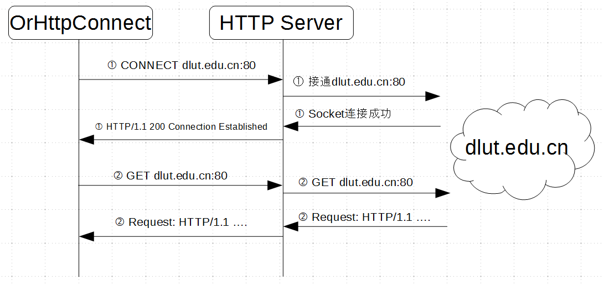

因为公司内部防火墙，没法自由的连接外网，只能通过HTTP服务器来访问允许的网站。 好在，HTTP服务器开了CONNECT。自己写了一个工具，利用它配合HTTP服务器的CONNECT就可以穿透防火墙了。
代码托管在： https://github.com/lixingke3650/OrHttpConnect
CONNECT
CONNECT是HTTP协议的一个方法，简单来说就是让HTTP服务器充当一个中间人，用它向外来发起你想要连接。HTTPS也是利用这个方法来建立通信的。 简单的请求头如下：
CONNECT www.dlut.edu.cn:80 HTTP/1.1
Host: dlut.edu.cn:80
Proxy-Connection: Keep-Alive
Proxy-Authorization: Basic *
Content-Length: 0
“Proxy-Authorization: Basic ”中的“”是登陆HTTP服务器用的验证信息，包含用户名密码，格式是 ： name:password, 并且需要用basic进行编码。 HTTP服务器接收请求并链接到指定的目的地后会返回包含 “HTTP/1.1 200 Connection Established” 的应答，否则返回一个 “Unauthorized”。
OrHttpConnect
OrHttpConnect这个工具可以告诉HTTP服务器帮我连接到哪里，联通以后HTTP服务器就成了一个传话员。 另外，CONNECT本身并没有加密功能，所以HTTP服务器虽然会忠于职守的帮我们转发数据，但有可能也会偷窥我们谈话内容，所以有特殊要求的同学，请使用别的方法来加密通信。
原理很简单，实现方法套用了之前OrTunnel的结构。 通信过程可参考下图：
嗯，就这些吧。 以上。
20161103
越来越懒。。
Comments